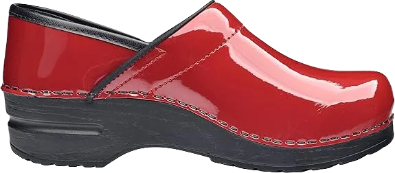

The 9 Best Shoes for Nursing with High Arches
If you work in a profession like nursing, which revolves around caring for others, it’s important not to forget about taking care of yourself. Being on your feet all day—and sometimes all night—can be extremely challenging. While others might notice your shoes, it’s often we who overlook the importance of choosing the right footwear. Not every shoe is made for professionals like nurses. Working shoes are designed with specific technical features to support those who have to stand and move quickly, especially in high-pressure environments.
For nurses and paramedics, suitable footwear is essential. Their roles require them to be constantly on the move, often assisting in emergency situations where there’s little to no time for rest. The demands of healthcare settings are intense, and the right shoes make a significant difference. As your profession dictates how you should dress, it’s clear that practical, supportive shoes are a must. Wearing something like high heels would simply not be appropriate or comfortable for someone in such an active, fast-paced job.
-
#1
DANSKO Women Professional Clogs
.webp)
The DANSKO professional nursing clogs are an excellent and suitable choice for nurses and anyone with a job that requires long hours of standing. Known for their comfortable and soft texture, the DANSKO brand is highly regarded for providing reliable footwear. If you’re looking for all-day comfort and relaxation, DANSKO clogs are designed to meet your needs, offering the perfect blend of support and ease.
The upper part of the shoe is crafted from high-quality leather, providing durability and a stylish appearance. Meanwhile, the sole is made with superior polyurethane foam, which delivers a soothing and comfortable experience throughout the day. The outer sole features a firm grip, ensuring stability and support, even when you need to walk or run briskly in a fast-paced environment.
In addition to these quality features, the shoe also incorporates a polyurethane rocker support at the sole. This advanced design helps to reduce foot aches and cramps, making it an ideal choice for professionals who spend long hours on their feet. With its thoughtful construction, the DANSKO nursing clog ensures both comfort and performance. -
#2
SKECHERS for Women Slip Resistant Shoe
.webp)
As the name suggests, this shoe offers exceptional slip resistance, making it ideal for smooth hallways or passages where tripping and slipping can be a concern. The SKECHERS brand is renowned for its comfort and durability, providing footwear that stands up to the demands of everyday working conditions. SKECHERS shoes are crafted with precision and care, ensuring they can withstand the harsh environments that come with active professions.
One standout feature of this shoe is its suitability for nurses or professionals with high arches. The design supports the lower part of the foot, offering a smooth, steady gait and reducing strain during long shifts. Nurses with high arches will particularly appreciate how the shoe contours to their foot shape, providing the necessary support for long hours of standing and walking.
In a hospital setting, nurses are constantly on the move, rushing from one task to another. These fast, frequent movements put significant pressure on the toes and ankles -
#3
TIMBERLAND PRO RENOVA SLIP ON CLOGS
.webp)
A nurse with sore feet cannot focus effectively on her job. That’s why this Timberland shoe ensures comfort without compromising on quality. With a premium leather upper and fine grain, it offers a stylish and durable design that stands up to the demands of long shifts.
From toe to heel, it features polyurethane Safe-Grip material, providing anti-slip support. This helps prevent falls while maintaining stability, which is crucial for nurses constantly on the move. The strong arch support also ensures a smooth gait, reducing foot strain.
Additionally, the shoe combats sweat with odor-repellent and anti-microbial properties, keeping feet fresh. Its 3M Scotchguard finish makes it stain-resistant, ensuring the shoe stays clean and sleek throughout the day. -
#4
SANITA PROFESSIONAL PATENT CLOG
A nurse’s job requires constant movement, and having the right shoes can make all the difference. The SANITA clogs for women are designed specifically for working professionals like nurses. The outsole is made of high-quality polyurethane, providing excellent traction and friction with every step, ensuring safe movement in fast-paced environments.
The polyurethane is reinforced with a protective plastic cover, offering extra durability and stability for long-lasting wear. The upper part features a sleek, shiny leather finish, adding a touch of elegance while ensuring a comfortable fit. It’s important to remove the plastic upper before use, as it can crack and cause discomfort over time.
For optimal body posture, the shoe includes a mild heel lift, promoting comfort and a smooth walking experience. The heel measures about 1.75 inches with a 1-inch toe lift, offering firm traction and multidirectional movement without hurting your feet, making it perfect for long shifts. -
#5
KLOGS USA NAPLES WOMEN SHOES
.webp)
This brand is a reliable choice for nurses and professionals who spend long hours on their feet. The shoe offers excellent arch support and balance, making it a must-have for those working long nursing shifts. In fast-paced environments, where running or brisk walking is common, having shoes that promote stability is essential for comfort and performance.
The high-arched design of these shoes ensures proper foot balance, which not only supports the foot but also enhances your gait. In this KLOGS footwear, the upper is crafted from high-quality leather, providing both durability and style. The flexible polyurethane outsole minimizes the risk of slips and falls, keeping you safe on the job.
The shoe features a two-inch heel, offering a moderate lift that contributes to a more comfortable stance during long shifts. This combination of support, balance, and height makes the shoe ideal for professionals who need reliable and comfortable footwear. -
#6
ASICS GEL-VENTURE 6
.webp)
In a hospital, where every moment brings a new challenge, nurses must be on their feet the entire time. Investing in a quality shoe can make all the difference, ensuring comfort and support throughout long shifts. This ASICS-GEL shoe stands out for being lightweight, which adds to the ease of movement and allows for a more comfortable walk.
One of the key features of this shoe is its detachable inner sole, which enhances the overall comfort. The sole is designed to provide excellent grip and is slip-resistant, acting as a protective barrier against any spilled liquids, preventing slips and falls on slippery floors. The high arch design evenly distributes foot pressure, from the toe to the heel, reducing strain.
During hot days, this shoe provides a cooling effect, thanks to its breathable materials that keep the nurse's feet dry and comfortable. While the shoe offers full traction and firm support, it's recommended to avoid wearing it on wet floors for optimal safety. -
#7
BROOKS GLYCERIN 11
.webp)
Being a nurse or paramedic comes with constant walking and movement, which can lead to serious foot issues if the right footwear isn't chosen. If you're looking for a nursing shoe with proper arch support, the Brooks Glycerin shoe is an excellent choice for your demanding work environment. Its well-balanced arch support is complemented by high-quality construction for long-lasting comfort.
This shoe features a 3D printed overlay, offering both durability and a modern design. The upper part of the shoe is made from a soft, breathable material that adds to the overall comfort and ensures proper airflow. The synthetic material sheathing, combined with a durable mesh, promotes excellent air ventilation for all-day wear.
Additionally, the snug fit of the Brooks Glycerin shoe provides a secure and relaxing experience. It wraps your feet comfortably, ensuring that each step feels supported and thoroughly cushioned, allowing you to focus on your work without discomfort. -
#8
NIKE Free Running 5.0
.webp)
This shoe is among the lightest options available, making it an excellent choice for individuals who spend long hours on their feet, such as nurses. Constructed with high-quality synthetic material in the upper, it effectively prevents dampness, ensuring your feet stay dry throughout the day. The advanced Flywire technology incorporated into the design enhances stability with each step, providing a secure fit that supports your movement.
When it comes to gait, this Restaurant Manager shoe features a rubber outsole equipped with hexagonal flex grooves, allowing for multidirectional movement and superior floor grip. The design ensures that you can navigate busy environments safely and efficiently without worrying about slipping or losing your balance.
Good airflow is essential for comfort, especially in enclosed footwear. The breathable mesh integrated into the shoe helps regulate air circulation, keeping your feet fresh and comfortable all day long. Additionally, this Nike shoe is built to last, capable of withstanding extended wear without breaking down. For paramedics and hospital nurses, this Nike shoe is undoubtedly one of the best options available. -
#9
NEW balance men MT 1210
.webp)
If you've chosen this shoe for your nursing duties, you'll surely find yourself praising your decision later. It incorporates the most advanced features designed to keep your feet comfortable throughout the day. The NXB shoe boasts a high-quality Vibram insole known for its exceptional durability. The upper is crafted from synthetic material and features a lace design complemented by a metal logo. With its N2 comfort low-grounded cushioning, this shoe ensures that your feet remain relaxed, whether you're running or walking quickly. Overall, it provides excellent grip and a sturdy sole to help prevent falls or tripping incidents.
When selecting nursing shoes, there are several important factors to consider. Here are some key points to keep in mind while purchasing footwear for work.